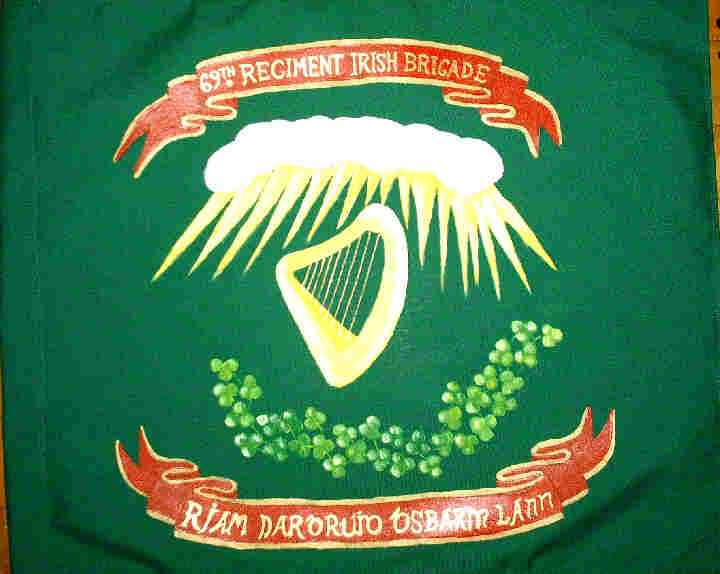
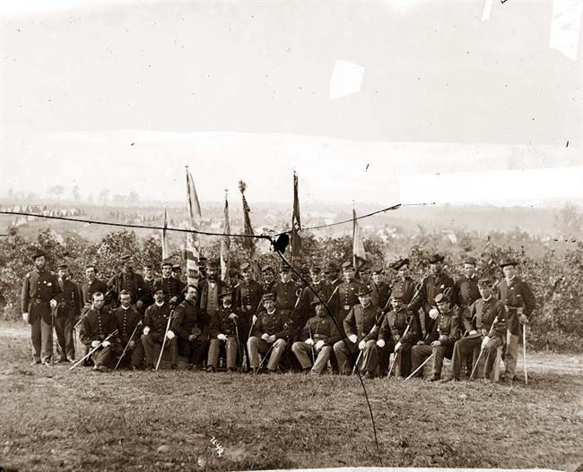
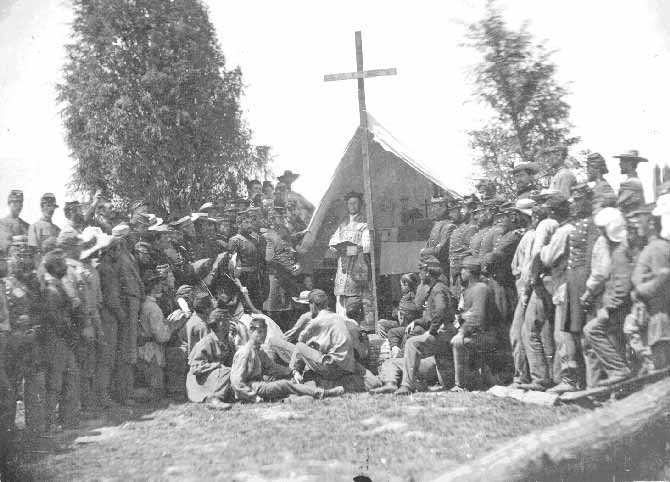

|
In conducting an analysis on the Union soldiers who chose to
partake in the bloodiest and most dramatic conflict in
American history, one must be wary not to presume that all
fighting men were similar in their motivations to join,
their courage in battle, or their experiences in war. The
character of war and its relation to the mass of troops, in
fact, varied according to factors such as the wealth or lack
thereof of the individual soldier, the time and method of
enlistment, the region of the country where the regiment was
stationed, and perhaps most important, the ethnic
composition of the fighting unit. Unfortunately, this final
element is frequently discounted because the vast majority
of foreign-born immigrants were placed in "American" units
where their differences in outlook and custom were, and
continue to be, overlooked as anomalies to the larger group.
That is to say, because immigrants were arranged in
native-dominated companies where they were far outnumbered,
the strength of their distinctiveness was diluted so much so
that their identities as immigrants failed to obtain
specific recognition. Nowhere is this more apparent than in
the study of Irish-born Americans, which is evidenced by the
fact that of the more than 170,000 Irish-Americans who
fought to save the Union between 1861 and 1865, there were
but few regiments specifically created by the United States
government to embody and represent Irish sentiment.
The object of this study, then, is to provide an analysis of
the Civil War experience as it pertained specifically to the
group of foreigners who were surpassed only by the Germans
in their willingness to join the Northern war effort:
Irish-Americans. To do so, this essay will examine the 69th
New York State Volunteers of the Irish Brigade, one of the
few exceptional regiments explicitly designed to preserve
|

The flag of the 69th New York Infantry Regiment
|
the special identity of Irish-born immigrants and to commend
to the public their important contributions to the Northern
cause. Through this analysis, the questions that Civil War
historians continually grapple with on a case by case basis
(including Why did they enlist to fight?, What explains
their performance in battle?, and Why did they stay?) will
be made clear with regard to Irish-born soldiers.
First, contrary to Bell Irvin Wiley's argument in The Life
of Johnny Reb and The Life of Billy Yank which confines the
soldiers' motivations to enlist to the superficial notions
of adventure and hatred for the enemy, this essay will
demonstrate that Irish-Americans were motivated by a
pragmatic need for income, an ideological zeal for the
liberties and freedom that a future America may hold, and
the memory of repression in Ireland. Second, the
Irish-American soldiers of the 69th exuded what is perhaps
the most splendid embodiment of bravery in the entire Union
Army. While the prevailing explanation for this courage has
been set forth by Stephen Crane in The Red Badge of Courage,
which asserts that societal pressure as a whole was the
predominant contributor to the soldiers' willingness to act
selflessly in battle, this essay will illustrate that the
Irish were not encouraged by their peers either in America
or in their homeland of Ireland to shed blood for the Union
cause. Rather, the men of the 69th in particular, and the
soldiers who fought in the Irish Brigade in general, acted
courageously because of their aspirations for an ideal
America. They believed that if they were able to
demonstrate their loyalty to the Union by giving their life
as the ultimate sacrifice, the United States may in fact
become a bastion of liberty and equality for Irish Americans
to share with all white citizens. Finally, this essay will
provide insight into why the Irish remained in the army for
the duration of this exceptionally bloody war. The fact is,
although many Irish were initially impartial to the war, the
Emancipation Proclamation of 1863 galvanized the
Irish-American community against the Union, as evidenced by
the New York City Draft Riots. Despite antagonism of this
nature, however, Irish soldiers remained a staple in the
Northern army throughout the war primarily because of their
firm commitment to the ideal of the betterment of Irish
people in America, the incredible level of morale among the
troops, and their reliance upon the military for providing
income, food, and shelter.
Immigrants from Ireland in the nineteenth century were not
heartily welcomed by the mainstream of American society. The
initial trend of relatively low immigration from Ireland in
the 1820s and 1830s changed dramatically in the mid-1840s,
when the terrible years of the potato-famine forced over one
million Irish to flee to the United States. These men and
women, however, never had an opportunity to assimilate
themselves into the American culture because they came with,
what was in essence, three strikes already against them.
First, their desperate poverty forced these refugees to
crowd into tenements and "shanty towns" in the worst
sections of the urban North. In order to fend off
starvation, they had no choice but to accept exceptionally
low wages and appalling working conditions. What ensued was
a race divide between the Irish and Northern blacks, as the
former effectively drove the latter out of the most menial
occupations that the North had to offer. Had the new
immigrants stopped here, their social status may not have
been a hindrance to their advancement. But by the 1850s,
Irishmen had become the dominant source of common labor in
the United States because of their low standards for
employment. The effect of this change was tremendous since
a large population of dislocated native-born white Americans
could legitimately claim that they had lost their jobs to
immigrants from Ireland. What naturally developed was an
animosity on the part of lower-class white Americans against
the Irish whom they viewed as a threat to their
livelihood.
The second aspect of Irish immigration that served to the
detriment of the new citizens was their religion of
Catholicism. The fear of a Papal conspiracy to undermine
the republican form of government had been prevalent among
Protestant America since the foundation of the Union, but
there had been little need to react since Catholics composed
a rather negligible portion of the United States population.
With the influx of Irish Catholics and the ensuing growth of
the Catholic Church in America, however, this dormant fear
was reawakened among the citizenry who deemed it necessary
to prevent the Irish from completing their alleged goal of
seizing control of the government. Ideal examples of this
paranoia can be found both in religious riots and the rise
of nativist parties. In Philadelphia, for instance, an 1844
riot between Protestants, Irish Catholics, and the militia
"left at least sixteen dead, scores wounded, two churches
and dozens of other buildings destroyed". To make matters
worse, nativist parties began to emerge with a predominant
goal of lengthening the period of naturalization before
immigrants could become citizens and vote, while at the same
time restricting the holding of political offices solely to
those men born in the United States. This is important
because it illustrates the existence of a concerted effort
by native-born Americans to preclude Irish immigrants from
reaping the rewards of the American system. What naturally
followed from this onslaught upon their constitutionally
protected rights was a defensive posture by the Irish-born
immigrants, who sought to isolate themselves from the
overbearing majority in the North.
The final element that precluded an easy transition into
American society was the cultural values of the Irish
immigrants. While natives condemned their inherent
criminality and their attempts to sow discord between the
United States and Britain, it was perhaps the Irish tendency
toward intemperance that infuriated Americans most. Before
1850, the temperance movement had largely been one of
encouraging self-denial. But with the conspicuous holdout of
the Irish to this "dry crusade," this heretofore peaceful
movement digressed into a "coercive movement aimed at this
recalcitrant element." Prohibitionists in the North began
to organize with the goal of passing laws that would ban the
manufacture and sale of alcoholic beverages in state
jurisdictions. While this may seem relatively petty, it must
be recognized that this was a deliberate attack on the Irish
way of life. This is not to suggest that all Irish-born
immigrants were dependent upon alcohol, but rather, the
utilization of alcoholic beverages went hand in hand with
many Irish festivities and their valued leisure time. So
when the Irish-Americans refused to abandon their cultural
traditions based upon the consumption of alcohol, there was
little that could be done to reconcile the feuding interests
of native-born temperate Americans and the foreign-born
immigrants from Ireland.
It would be reasonable to conclude from their history of
discrimination at the hands of Northern whites and their
feelings of contempt toward the black race that Irish-born
immigrants would either opt to remain neutral or possibly
even side with the Confederacy during the Civil War. In
fact, there are a number of legitimate arguments for this
position. First, the Irish had as much reason to reject the
new Republican party of the North as they had the nativist
party that it supplanted. This was precisely because the
nativist and temperance reformers from the Know-Nothing
party, who had adamantly opposed the assimilation of the
immigrants from Ireland into American society, found a new
political home among the party of Abraham Lincoln. Second,
being a generally conservative and rural people whose
Catholic faith resisted "the abstract idealism that
motivated the abolitionists, the Irish could readily defend
the Southern way of life," where the cult of white supremacy
and the institution of slavery ensured that they would never
fall to the lowest rung on the social ladder. At the time,
it would have been hard to imagine that the Irish people
could overlook their intense hatred for the race of black
men and women who served to threaten their economic
security. Third, citizens of Ireland were overwhelmingly
against the Northern effort to preserve the Union by force.
It was a combination of hostility toward the Protestant
abolitionists in the North and a basic conservatism that
entailed the abhorrence of bloodshed that served to convert
most Irish men and women against the war effort. Finally,
it is not difficult to draw an analogy between the Southern
effort to secede from the Union and Ireland's long-futile
effort to wrench itself free from British control. Not only
|

Officers of the 69th New York
|
did each seek to escape from an overbearing government, but
both had institutions that they sought to conserve and
possibly perpetuate. While in Ireland this took the form of
Catholicism, in the South this involved the peculiar
institution of slavery.
Although it is true that the aforementioned elements served
to dissuade many Irish-born immigrants from partaking in the
war experience, and therefore it must be conceded that the
Irish were the most under-represented group in the war in
proportion to their population, the fact remains that more
than 170,000 Irish men fought for the Northern Army. This
places the Irish second only to the Germans in the total
number of immigrants who joined the war effort on behalf of
the North. So the question naturally becomes: Why were the
Irish willing to enlist in the army and why were they
willing to stay and fight once the battles became so
bloody?
From an analysis of the 69th New York State Volunteers,
which entails an effective cross-section of the Irish-born
soldiers who served the Northern cause, it is possible to
discern five dominant causes which led these men to
entertain strong Union sentiments. This is not to suggest
that all Irish soldiers were influenced by each one of the
following causes, but rather, one or more of these elements
can be found as dominant influences in leading these men to
battle. First, despite the fact that most of these men had
to endure prejudice in the pre-war years, there remained an
intense American nationalism among the Irish immigrants.
Many individuals, like Brigadier General Thomas F. Meagher,
felt compelled to defend the constitutional integrity of the
country which had provided them with a sanctuary from
persecution in Ireland. As David Conyngham noted of his
beloved general, "America had welcomed him to her bosom: he
now stood beside her in her hour of need". This is important
because it is indicative of the pervasive feeling among the
Irish that even though they had experienced hardships in the
new land, they nonetheless owed it a great deal. And
allegiance to the federal government in its time of despair
was a good way to recompense this debt.
The second influence that led many men to join was the
belief that the future of the their families who remained in
Ireland was optimistic contingent upon the preservation of
the Union. This can be illustrated by the case of
Irish-born James McKay Rorty. With most of his family still
in Donegal, Ireland, Rorty sent a letter to his disapproving
father which sought to justify his enlistment in the Federal
Army. He said that the "separation of this Union into North
and South would not only be fatal to the progress of
constitutional freedom but would put impassable barriers in
the way of future immigration. Our only guarantee is the
Constitution, our only safety is in the Union, one, and
indivisible." The soldiers of the 69th New York, like many
of their Irish-born brethren, cherished the life they had
found in the United States. And they recognized that a
fracture of the Union might preclude their families in the
old country from reaping the benefits to be found in
America. Although there remained much to be desired with
regard to native-immigrant relations, these men believed
that the future of their relatives was bright only so long
as America remained whole.
The third reason for Irish support of the Union was the
underlying hope in the future improvement of social
relations in America. As has been previously alluded to,
Irish immigrants were severely victimized prior to the war
because of their impoverishment, religion, and cultural
customs. Due to these factors, they never had an
opportunity to realize the American ideals of liberty,
equality, and economic advancement. Many of the soldiers of
the 69th New York, then, saw their participation in the war
effort as a means by which to overcome the nativist
suspicions that had served to keep the Irish people down. It
was reasonable to conclude that if the Irish-born immigrants
were able to demonstrate their loyalty to the Union by
giving their life as the ultimate sacrifice, American
natives could no longer look upon them as foreign and
unworthy of respect. And with this prejudice eliminated,
the world of opportunity that had heretofore been restricted
from the Irish might become a reality for future generations
of Irish immigrants in America. Perhaps the best expression
of this belief came from Cicero C. Fancher, a non-Irish
soldier of the 123rd Illinois Volunteers, who said, "Their
life has been given to their country. The most sacred gift
that mortals prize yet to secure a country environed with
the golden chains of Liberty and freedom."
A fourth factor that contributed to the Irish support for
the Union can be discerned in the overwhelming hostility
that members of the 69th New York felt toward Britain. Not
only did the perceived British support for the Confederacy
rally the Irish toward the North, but many also believed
that the fracture of the Union would serve to enhance the
world dominance of the English. With the further
empowerment of Great Britain, the prospect of a successful
war of liberation in Ireland would be vastly diminished. By
assisting the Federals, therefore, America could both remain
the rational base of operations for an ensuing civil war in
Ireland and it could provide useful military training to
those men who would lead the charge against the British. No
regiment adhered to this theory more than the 69th New York.
In fact, it instituted within the Irish Brigade the "Fenian
'Officer's Circle' in the Army of the Potomac (which was
the) focal point of an Irish revolutionary group bent on the
liberation of Ireland from British rule."
The final element which led many Irish to share in the war
effort pertains to the economic crisis that followed the
Confederacy's attempt at secession. Since the dislocation
of the economy invariably impacted the working classes most
severely, the mass of unemployed Irish laborers in the
mid-1860s often found enlistment in the army as the only
means by which to prevent the starvation of their families.
And even as the war progressed and the Northern economy
rebounded from its initial slump, the economic incentives
contained in bounties and salaries remained a dominant
factor in the enlistment of the Irish.
With an array of motivating factors, the Irish-born men who
would later form the 69th New York State Volunteers in the
fall of 1861 answered President Lincoln's call for
ninety-day volunteers and formed the 69th New York State
Militia in April of the same year. At the Battle of Bull
Run, the 69th arrived at the Stone Bridge on the Warrenton
Turnpike before dawn on July 2 1, 1861, and formed under
Brigadier General William T. Sherman's brigade. Sensing
that a great battle was sure to ensue and that the prospects
for an elongated war were minimal, the 69th was forced to
anxiously await its chance to demonstrate its fighting
prowess until 2:30 p.m. when it was pulled from the reserve.
At General Sherman's command, Captain Meagher valiantly
swung his sword over his head and shouted to his company of
Irish Zouaves: "Come on, boys, here's your chance at last."
Three times the 69th attacked uphill toward the Confederate
position, however, and three times they were repulsed in
heavy fighting. Recognizing that the color-bearers who were
carrying the green flag of the 69th into combat for the
first time served as prominent targets for the rebel
sharpshooters, Colonel Michael Corcoran asked the men to
withdraw the flag from view of the enemy. "I'll never lower
it," replied the color-bearer, who was then killed instantly
by a rebel bullet. The Zouaves of Captain Meagher's company
provided an even more conspicuous target for the Confederate
army, as their red attire attracted the wrath of the enemy
forces. After his men had suffered desperately, Meagher's
horse was "tom from under him by a rifled cannon ball... he
jumped up, waved his sword, and exclaimed, 'Boys! Look at
that flag - remember Ireland and Fontenoy." This, however,
was to no avail as the valiant effort of the Irishmen was
effectively rebuffed by a combination of the Confederate
artillery and infantry. Although the men of the 69th
clearly demonstrated their bravery, the cost of the assault
was terribly high. Of the nearly one thousand Irishmen of
the 69th who entered the battle, the regiment's casualties
numbered 192 men, including the capture of Colonel Corcoran
and 94 others.
While the zeal with which the 69th New York State Militia
fought was admirable, it would be an injustice to the
countless number of other Federal regiments who suffered
equally in the Battle at Bull Run to single out the Irishmen
for exhibiting exceptional bravery because of their high
casualty rate. With this qualification, however, one can
nonetheless argue that the 69th New York exhibited the most
admirable courage that a group of men could possibly exude.
As has been suggested, the 69th fought with a selfless,
reckless spirit on behalf of the nation. This in itself is
not entirely extraordinary. But when combined with the fact
that the men of the 69th were under no obligation to act
like "sheep sent to the slaughter" because their ninety-day
period of enlistment had ended the previous day, it is easy
to identify their actions as tremendous. They placed
themselves in a vulnerable position at the foot of an
unfortified hill not because of a written obligation, but
because they believed in the Northern cause. While they
could have refused to fight without the specter of
retribution, these men of the 69th voluntarily chose to
place their lives in jeopardy so that the Federal Army could
be empowered to quell the secessionists of the
Confederacy.
After the debacle at the First Battle at Bull Run, the
depleted 69th New York State Militia saw no further combat,
but it was not until August that the ninety-day soldiers
were mustered out of the military. Immediately, the vast
majority of veterans signed up for service under a new unit:
the 69th New York State Volunteers. But with the regiment's
commander Colonel Corcoran languishing in a Confederate
prison, the troops were without a leader. Sensing the need
to retain the Irish purity among the ranks of the 69th, the
Army leadership turned to the able Captain Meagher who had
performed so well at Bull Run and appointed him regimental
major. It was understood that General James Shields would
assume command of the brigade to which the 69th belonged.
When General Shields refused the offer, however, everyone
looked to Major Meagher. As a result, Thomas F. Meagher was
appointed brigadier general in February of 1862 and he
assumed control over what would forever be known as the
Irish Brigade one month later at its camp in Virginia.
After spending most of the spring of 1862 training in
Alexandria, Virginia, the men of the 69th were dispatched to
take part in the Peninsular and Seven Days' Campaigns. These
battles will be studied conjointly not simply because the
69th avoided the worst of the action in both cases, but also
because the "muddy roads of the Peninsula and the smoke
filled battlefields of the Seven Days' signaled the
transformation of these men from starry-eyed recruits to
battle hardened veterans." After a series of supporting
roles that served to first establish the fighting reputation
of the Irishmen, the 69th was ready to take part in its
first great battle at Malvern Hill. As June of 1862 turned
into July, General Robert E. Lee of the Confederacy was
determined to destroy the apparently battered Union army at
Malvern Hill and thereby conclude the fighting at the
Peninsula that had begun in March. During the initial
stages of the battle, it appeared that the uncoordinated
attack of Lee might be adequate to defeat the weakened
federal troops. This scenario, however, was soundly
reversed when the 69th assumed the lead in a daring charge
on the rebel position atop the hill. Under fierce fire from
the entrenched enemy, the Irishmen pressed the hilltop where
a savage hand-to-hand battle ensued. Overwhelmed by the
stellar display from the 69th, the Southern troops were
forced to flee from their fortified position at Malvern
Hill, providing the Irishmen with their first major victory
in the war.
Victory, however, was not to come without the endurance of
casualties for the 69th New York State Volunteers. Among
those captured while taking the hill was Lieutenant John H.
Donovan of Company D, who had been shot through the ear just
under the brain while charging with his company. Early the
next morning in the Confederate camp, Generals Hill and
Magruder approached the several captured officers and
demanded their side-arms and revolvers. The conversation
that ensued after the generals learned that Lt. Donovan
refused to surrender his weaponry epitomizes the reputation
that the men of the 69th had developed in their limited work
during the Peninsular Campaign. It is important primarily
because it denotes the acquisition of respect from the
Confederate leadership that the men of the 69th in
particular, and the regiments of the Irish Brigade in
general, had earned in a very limited amount of time.
'I think,' said the general, 'from the apparent nature of
your wound, you won't have much need of them in the future.'
'I think differently, general,' replied the other,
indignantly: 'I think I have one good eye left yet, and will
risk that in the cause of the union. Should I ever lose
that, I shall go it blind!' 'What command do you belong to?'
'Meagher's Irish Brigade.' 'Oh, indeed!' said the other,
passing on.
In September of 1862, General George B. McClellan's Army of
the Potomac followed General Lee's Army of Northern Virginia
through the southern Maryland countryside to a small village
called Sharpsburg, whereupon the Confederate troops
entrenched themselves in a cornfield owned by a farmer named
Roulette near a creek called Antietam. On the "bloodiest
single day of the war (September 17, 1862)," the Federals
launched a series of uncoordinated, piecemeal attacks that
included General Meagher and the 69th crossing the Antietam
creek and moving uphill toward the Confederate
fortification. Five times the men of the Irish Brigade
charged the well defended Confederate line in a sunken road,
which was later coined "Bloody Lane," and five times they
were repulsed in heavy fighting. The 69th had little choice
but to seek cover from the Confederate barrage on a little
knoll one hundred yards from the sunken position. Here they
may have had an opportunity to inflict damage upon the rebel
forces had an ammunition shortage not ensued, which left the
men no choice but to retreat in an orderly fashion to the
rear of the Union lines.
Once again, the men of the 69th had to pay a heavy price in
order to demonstrate their bravery in battle. By one
account, it appeared that every man in Company F had been
either killed or wounded, with the exception of eleven.
While this account may have been an anomaly, it is
undisputed that the 69th suffered dearly in its attempt to
repulse the rebels from Bloody Lane.
The 1,200 survivors of the Irish Brigade, which equaled less
than one-third of its original strength, underwent its next
trial by fire in December of 1862 at Fredericksburg. Under
General Ambrose Burnside, the Army of the Potomac endured
weeks of cold and rain while the Confederates fortified
their positions during the first week of December. Despite
the fact that an assault on the rebel position now seemed
suicidal, Burnside persisted, and consequently ordered the
69th to lead the Irish Brigade down Hanover Street toward
the canal. When it became time to charge, the brigade began
|

Members of the 69th New York Infantry hear a mass in 1862
|
pushing toward the very center of the Confederate defenses
on Marye's Heights. Despite the murderous fire from the
rebels, the brigade never wavered in its push uphill toward
the Confederate line. A surviving soldier would later note
of the conditions under which the charge was made: "No one
who has not witnessed such a scene can form any idea of the
awfulness of that hour... the reports of the musketry was
one continual crash and, far above all, the thunderous tones
of hundreds of cannon completely drowned the encouraging
shouts of the officers." Yet even as the rebel forces were
successful in destroying entire lines of the Irish Brigade,
the vacancies were continually and miraculously filled by
other Irishmen as the troops maintained a steady advance.
Although this desperate charge was to no avail and the
rebels maintained their position, it is clear from personal
accounts that the 69th earned the utmost admiration and
respect from leaders of both the North and South. It was
the Confederate observers, ironically, that were
particularly impressed by the display of courage under fire.
General James Longstreet thought the charge of the Irishmen
to be the "handsomest thing in the whole war," General Lee
declared that "Never were men so brave," and General Pickett
thought the "brilliant assault ... was beyond description
... we forgot they were fighting us, and cheer after cheer
at their fearlessness went up along our line." These
remarks, however, do not negate the fact that the Irish
Brigade suffered an absurd amount of casualties in their
effort at Fredericksburg. Of the 1,200 men who entered the
contest, almost 500 were killed or wounded and another 400
had been captured. The casualty figures for the 69th are
equally stunning, as it lost sixteen of nineteen officers
and over 75% of its enlisted men in the defeat.
The final engagement that this essay will discuss transpired
some seven months later at the small town of Gettysburg.
This contest was made all the more threatening because the
Irish Brigade was without the guidance and leadership of
Brigadier General Thomas F. Meagher, who had resigned
command of what he called "this poor vestige of and relic of
the Irish Brigade" because the Northern leadership
disapproved of his proposed effort to raise more troops in
New York City. The men of the Irish Brigade arrived at the
battlefield on the early morning of July 2, 1862 and were
held in reserve. Late that afternoon, the men of the 69th
were combined with the remains of the 63rd, 69th, and 88th
New York since all had been weakened and then sent in to
support General Sickles' crumbling line which ran through
the Wheatfield. Immediately, the men were met by a volley
from the rebel batteries which created an opening in the
center and left of the Irish line. Before these gaps could
be adequately replenished, the coalition of Irishmen that
formed the quasi-regiment were confronted by a group of
advancing Confederates who "poured into the Irish ranks a
most destructive fire" from only thirty feet out. Perhaps
due to the shock of this encounter, the Irishmen returned a
single volley and then charged the rebel line with bayonets
raised. Moments later, the bewildered Confederate troops
surrendered and were subsequently taken prisoner by the
victorious men of the Irish Brigade.
Essentially, this victory at Gettysburg signaled the demise
of the 69th New York State Volunteers, as they suffered a
40% casualty rate and now numbered under 200 men. Although
it would remain in tact at the superficial level for the
duration of the war, it would never again comprise an
effective, individual fighting unit. Instead, the survivors
of the 69th would be inserted into various regiments and
made to fight without the admirable reputation it had earned
as a group during the early battles of the war.
Each of the aforementioned cases which illustrate valor and
courage have been introduced because they invariably raise
the question: What could have motivated the men of the 69th
New York to behave as they did in battle? When this
question is advanced with regard to the 300-400 core
fighting units of native-born, enlisted men in the Civil
War, the predominant answer one receives is that the sense
of duty and godly omnipotence that prevailed among the men
during this era was perpetuated and reinforced by societal
pressures. That is to say, peers at home and on the field
encouraged selfless, honorable action and frowned upon
cowardice. In the case of the 69th New York and
Irish-American ethnic units in general, however, this
generalization does not hold true. Unlike the
characterization set forth by Stephen Crane in The Red Badge
of Courage where the protagonist must constantly struggle in
his effort to satisfy the expectations of his comrades, the
surviving memoirs and documents from the men of the 69th
suggest that their bravery in battle was the spontaneous
manifestation from a combination of their ideal for a better
America and the tremendous level of morale that pervaded
camp life. Rather than feeling coerced into a particular
mode of action, the men of the 69th demonstrated bravery
freely and without manipulation.
The primary reason for the stellar performance of the 69th
in battle can be explained in terms of the men's aspiration
for a healthier United States. As has been previously
explicated, Irish-Americans were not heartily welcomed into
the mainstream of American society. They had been precluded
from enjoying the economic and social benefits of
assimilation because nativeborn Americans distrusted their
background of impoverishment, Catholicism, and intemperance.
For this reason, they had been forced to remain at the
lowest rung of the social ladder without an opportunity for
self-improvement. This is precisely what the men of the
69th sought to change by joining the war effort. Like the
vast majority of Irish-born soldiers, they believed that by
acting courageously in battle and giving their life as the
ultimate sacrifice, they would be able to prove their
loyalty to the United States and thereby earn the trust and
respect of the native-born population that had served to
hinder their advancement in the past. Then and only then,
they believed, could future immigrants from Ireland have a
realistic opportunity of enjoying the fruits of liberty and
equality in the new country. A second factor that was
dominant in creating an atmosphere which inspired bravery
among the men was an exceptional level of morale instilled
by the leadership. The individual soldiers of the 69th had
a great deal of confidence in and respect for their
superiors, most notable of whom was Brigadier General Thomas
F. Meagher. This was because leaders like Meagher would not
only be willing to lead their men into battle from the front
as opposed to taking sanctuary in the rear, but also because
they created a festive, enjoyable camp atmosphere to offset
the monotony of drilling and the terror of battle. For
example, at the battle at Malvern Hill when the fighting of
the 69th became one of savage hand-to-hand combat, General
Meagher "exhorted his men to throw off their gear and charge
with bayonets." When the men complied, he assumed the lead
in the bayonet charge and was among the very first to strike
at the enemy. This is important because Meagher never asked
his men to do anything that he himself would not do. He was
a leader among men, rather than a leader of men who treated
the latter as mere pawns. And for this reason, he and the
remainder of the leadership were able to earn the respect
and confidence of the men.
At the same time, however, the leaders of the 69th
recognized the necessity of providing a reprieve for the men
from all of the violence and hardships of battle. To this
end, a rather spirited and merry camp life was established.
The brigade's celebrations of St. Patrick's Day, for
instance, were legendary in the army, as "horse races,
athletic contests, dances, theatricals, and recitations
marked the day, all well lubricated with whatever spirits
came to hand." Perhaps a more pertinent example of the
intentional dichotomy between hardship and pleasure created
by the leadership to instill a sense of contentment among
the men came the night of the disastrous battle at
Fredericksburg. After the survivors of the battle
commandeered a shell-damaged building in the city, large
tables of food were set out, liquor flowed freely, and
General Meagher topped the list of speakers for the party.
This gala became so loud, in fact, that General Burnside,
heard the commotion from his headquarters on the far side of
the river and ordered the festivities stopped before the
Confederates resumed their shelling. This story is important
because it illustrates the fact that life for the men of the
69th was not as deplorable as that of the common soldier in
the Civil War. Recognizing that the rate of desertion and
the effectiveness of fighting for Civil War units declined
as the individual soldiers' states of mind worsened, the
leadership of the 69th New York worked diligently to ensure
that their men were satisfied throughout the war. And
because they were successful in their effort, they received
a much higher return in terms of the effectiveness with
which their men performed in battle.
From what has already been set forth in the previous
sections of this essay, it is a relatively simple task to
categorize the factors which persuaded the men of the 69th
New York to remain with the Union army for the duration of
the war despite the waning support of the Irish American
community after the Emancipation Proclamation of 1863. First
and foremost of these influences was the soldiers'
commitment to the ideal of an improved America where the
Irish could share equally with all white citizens the fruits
to be reaped in a land of liberty and equality. Second,
Irish-Americans in the mid-nineteenth century were an
impoverished group that had been preordained by American
society to compete with blacks for the lowest paying jobs
with the worst conditions. To these individuals, the
income, food, and shelter provided by the military easily
outweighed the life at home and the hardships of battle,
making the choice to remain in the army a relatively easy
one. Finally, there was an incredible level of morale among
the troops of the 69th which served to strengthen the
desirability of remaining in the army. In considering the

Irish Brigade monument at Gettysburg
|
option of whether to return home and resume life in the
worst sections of the urban North where each day presented a
struggle for the barest of subsistence or remaining with the
regiment where comrades and food were plentiful and life was
not altogether unpleasant, it is not difficult to understand
why the vast majority of men decided to remain with the army
for as long as the war would allow. Conclusion
The experience of the men who served in the 69th New York
State Volunteers, then, cannot be understood simply be
conducting a random analysis on Northern regiments in the
Civil War. The goal of this essay has been to demonstrate
that the most appropriate method for setting the men of the
69th apart from their native-born comrades is through an
understanding of their motivations for enlisting in and
remaining with the army for the duration of the war. As it
was through this distinction that their unique Irish and
Catholic identities became particularly unique. Whereas it
may be appropriate for historians like Bell Wiley to limit
the motivations of the majority of native-born soldiers to
the quest for adventure and hatred for the enemy, this would
surely be an inadequate summation for the men of the 69th
New York. Their reputation as courageous fighters is also
sufficient in itself to set them apart from the mass of
soldiers who fought for the Union. And statistics
demonstrate that this notoriety was well-deserved. They
served in the Northern army that sustained the most
casualties (Potomac), the corps that suffered the most
casualties (2nd), and the division that experienced the
greatest loss in the corps (1st). The brigade in which they
served, the Irish Brigade, sustained more than 4,000
casualties during the war despite the fact that it never
committed more than 3,000 men at any one time. Finally, the
69th New York as an individual regiment ranked among the top
ten out of more than 2,000 Northern regiments in the number
of combat deaths. To put their record in perspective, it
may be useful to note that during the war, three soldiers
died of disease for every one who died as a result of
battle. For the 69th, on the other hand, this ratio was
almost reversed as two died of battle wounds for every one
who died of disease or accident. Therefore, while the
experience of most soldiers was one of confronting the
specter of disease as the primary cause of death, the men of
the 69th had no such concern. Though there were many who
did pass away because of sickness, the vast majority of
Irishmen remained healthy in camp and were able to make
their ultimate sacrifice where it counted most: on the
battlefield.
Source: History 191 Student Joshua Dean
|